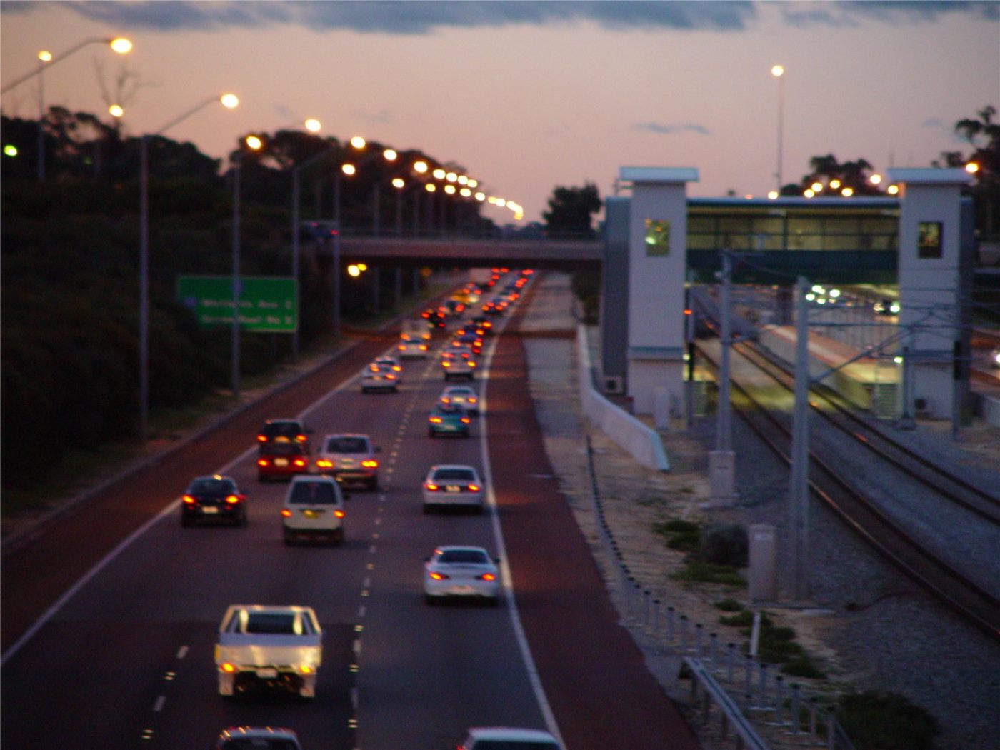

이란현 점멸 신호 교차로서 승합차 사고… 8명 부상
대만 이란현 싼싱향의 점멸 신호 교차로에서 참배단 승합차가 논으로 튕겨 나가는 사고가 나 8명이 다쳤다. 같은 도로에서 사고가 반복돼 왔다.
여년재 기자 · 2026.09.23
橋사회

대만 이란현 싼싱향의 한 교차로에서 참배단을 태운 승합차가 사고를 당해 8명이 다쳤다. 차량은 충격으로 도로 옆 논으로 튕겨 나간 것으로 전해졌다.
광고 문의 · 300×250사고가 난 교차로는 점멸 신호로 운영되는 지점이다. 점멸 신호는 한쪽에 황색, 다른 쪽에 적색을 표시해 통행 우선순위를 정한다.
해당 도로에서는 이전에도 사고가 반복돼 왔다는 지적이 나왔다. 교차로 구조와 시야 확보 문제가 함께 거론된다.
점멸 신호 교차로는 교통량이 적은 시간대의 대기 시간을 줄이는 장점이 있다. 반면 운전자의 판단에 의존하는 비중이 커 사고 위험이 높아질 수 있다.
개선 방안으로는 정규 신호 전환, 감속 유도 시설 설치, 시야 방해물 제거가 거론된다. 각각 비용과 통행 효율에 미치는 영향이 다르다.
참배단 이동에는 승합차가 널리 쓰인다. 다수가 함께 이동하는 만큼 한 건의 사고에서 부상자 수가 늘어나는 경향이 있다.
부상자들은 인근 병원으로 옮겨져 치료를 받고 있다. 경찰은 사고 경위를 조사하고 있다.
한국에서도 농어촌 지역 점멸 신호 교차로의 사고 위험이 여러 차례 지적돼 왔다. 야간 시인성 개선이 주요 대책으로 제시돼 왔다. (자료: 연합보 등)